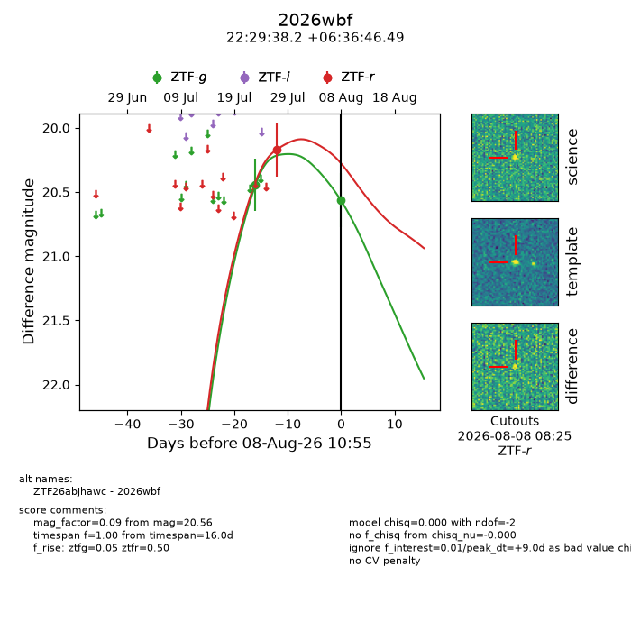
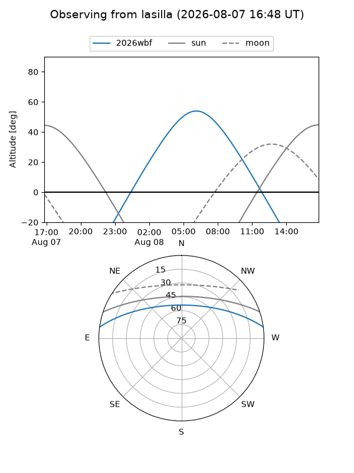
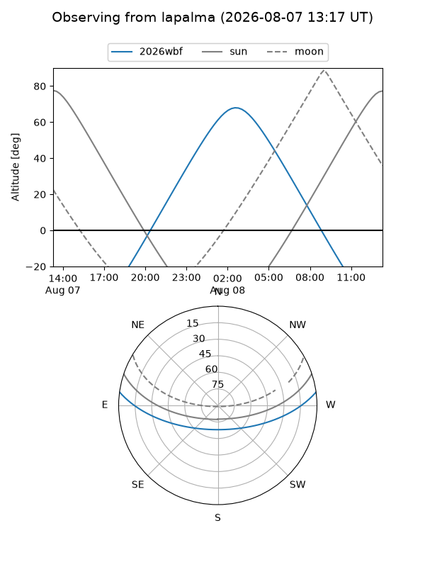
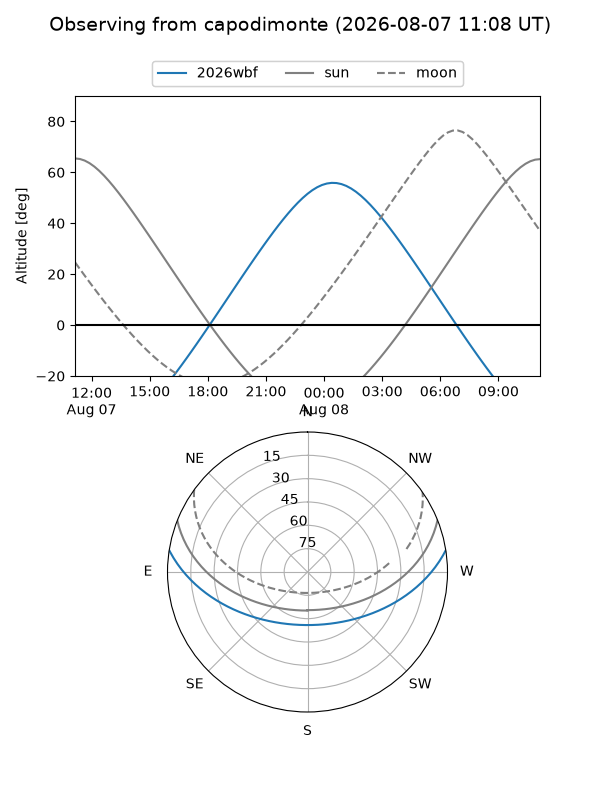
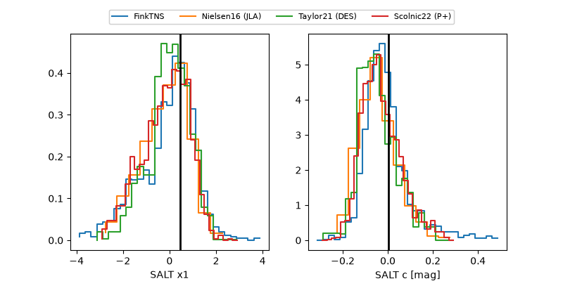

2026wbf
Target 2026wbf at 2026-08-08 10:57
Aliases and brokers:
FINK-ZTF: ztf.fink-portal.org/ZTF26abjhawc
Lasair-ZTF: lasair-ztf.lsst.ac.uk/objects/ZTF26abjhawc
ALeRCE-ZTF: alerce.online/object/ZTF26abjhawc
YSE-PZ: ziggy.ucolick.org/yse/transient_detail/2026wbf
TNS name: wis-tns.org/object/2026wbf
Direct TNS query: direct search
alt names
ZTF26abjhawc (ztf,fink_ztf)
2026wbf (tns,yse)
Coordinates:
equatorial (ra, dec) = 337.4092,+6.61291
equatorial (HMS+DMS) = 22:29:38.21,+06:36:46.49
galactic (l, b) = (72.2266,-41.88721)
Flags:
TNS type: nan
peak dt: +9.0
Photometry:
last ztfg=20.56, ztfr=20.17
2 ztfg, 1 ztfr detections
Lightcurve

Visibility



Additional plots
